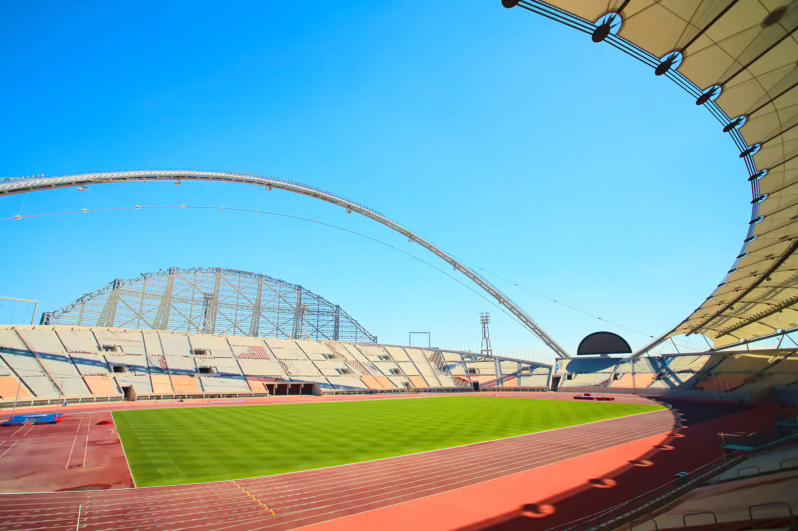

Khalifa International Stadium

Seul stade du pays qui existait avant l’attribution de la Coupe du monde de football
au Qatar, le Khalifa International Stadium est l’arène la plus emblématique du pays. Ses 40 000 places
accueilleront des matchs jusqu’au quart de finale. Doté de technologies de climatisation avancées
garantissant aux joueurs et au public une température idéale, le stade affiche également sa nouvelle
modernité dans sa structure externe, reconnaissable à ses deux arches.
Al-Bayt Stadium
Situé dans la ville d’Al-Khor, le Al-Bayt Stadium doit accueillir l’une des
demi-finales de la Coupe du monde 2022. Présentant un design saisissant qui rappelle les tentes des
Bédouins, ce peuple nomade qui parcourt l’ensemble du monde arabe depuis des siècles, cette arène
de 60 000 places s’inscrit dans un complexe plus large comprenant diverses infrastructures, parmi lesquelles
un centre commercial et un hôpital. Ce stade construit à 60 kilomètres de Doha est l’un des plus difficiles
d’accès pour les supporters
Al-Janoub Stadium
L’Al-Janoub Stadium est une arène vraiment remarquable d’une capacité d’environ 40
000 spectateurs, conçue par la regrettée architecte Zaha Hadid, de renommée mondiale. Les courbes de
l’édifice sont caractéristiques de son style : les formes de cet élégant stade du Qatar sont inspirées des
coques des bateaux de pêche perlière qui ont longtemps œuvré le long des côtes de la péninsule arabique.
Cette inspiration se reflète également dans l’utilisation de matériaux traditionnels, notamment de bois,
dans la structure.
Education City Stadium
Situé sur le campus de la principale université du Qatar,l’Education City Stadium est
une arène de 40 000 places qui accueillera des matchs jusqu’aux quarts de finale de la Coupe du monde 2022.
Sa silhouette reprend la forme d’un diamant taillé, qui miroite le jour et s’embraser la nuit. L’édifice
devrait voir sa capacité réduite de moitié après le tournoi, puisque un don de plus de 20 000 sièges doit
servir à ériger des stades dans des pays en développement.
Stade Al-Rayyan
Bâti sur le site de l’ancien stade Ahmed bin Ali,, le stade Al-Rayyan offre une
capacité de plus de 40 000 personnes qui lui permet d’accueillir des matchs jusqu’à la phase des quarts de
finale de la Coupe du monde au Qatar.
Al-Thumama Stadium

Situé à seulement 12 kilomètres du centre de Doha, l’Al-Thumama Stadium peut
accueillir jusqu’à 40 000 personnes. Le design intéressant de cette arène s’inspire du kufi, le couvre-chef
traditionnel en tissu que portent les hommes arabes.
Ras Abu Aboud Stadium
Doté de 40 000 places, le Ras Abu Aboud Stadium est un exploit écologique établi sur
les rives du golfe Persique et surplombant Doha, située à seulement quelques kilomètres. Fabriqué à partir
de conteneurs et d’autres matériaux réutilisés, ce stade sera démantelé après la Coupe du monde 2022 et ses
pièces serviront à réaliser d’autres projets dans le pays.
Lusail Iconic Stadium
Le Lusail Iconic Stadium doit accueillir le match d’ouverture et la finale de la
Coupe du monde 2022. Cette arène en cours de construction peut recevoir un peu plus de 86 000 personnes. Les
architectes britanniques du cabinet Foster + Partners se sont inspirés de la vannerie traditionnelle du
monde arabe afin de concevoir un lieu éblouissant pour l’ouverture et la clôture du tournoi.